Executive Summary
산업단지의 화재·누출·이상 고온을 자동 감지하라고 모은 122만 장의 열화상이 있습니다. AI Hub의 열화상 카메라 이미지 데이터셋(dataSetSn=235)은 10종 객체(저장탱크, 이송배관, 이송밸브, 배전반, 에어컨 실외기, 공장 외부·내부, 사람, 자동차, 배)를 정상/이상 두 상태로 나눠 찍은 20개 클래스, 1,223,849장의 자료입니다. DataClinic 리포트 #128이 이 자원의 어디까지가 단단하고 어디부터가 무른지를 보여 줍니다.
L1에서 채널은 RGB와 RGBa로 80:20으로 갈리고, 클래스 간 이미지 수는 11.14배까지 벌어집니다. L2 범용 신경망(1,280차원)에서 평균 0.45였던 정상/이상 밀도 차이는, L3 도메인 최적화 렌즈(120차원)로 옮기면 약 1.3, 3배 가까이 확대됩니다. 차원 최적화가 분류 경계를 더 또렷하게 그려준 셈입니다.
차원이 풀지 못한 신호는 다른 자리에서 나타납니다. 이송배관-정상의 가장 전형적인 이미지(밀도 2.77)와 이송배관-이상-누출(중앙값 약 1.0)은 같은 배관 도메인 안에서 가장 극적인 대비를 만들고, 사람-정상(D1)·자동차-정상(D30) 저밀도 이상치는 L2와 L3 모두에서 같은 사진을 1·2위로 반복합니다. 사람-이상-식별 클래스의 고밀도 상위권은 CAR_AON_21.02.05_…_D20_ 계열 파일이 점령합니다. 자동차 이상 촬영 씬의 bbox가 사람-이상 라벨로 흘러든 흔적입니다.
⚠️ 점수·등급 미확보 안내. DataClinic 종합 점수와 L1·L2·L3 등급은 인증이 필요한 항목이라 본 파이프라인에서 수집하지 못했습니다. 본문은 점수 단정을 피하고 분포·이상치·라벨에 대한 정성 발견을 중심으로 서술합니다. 비교 프레임 섹션에서만 같은 AI Hub 도메인의 이웃 리포트 점수를 참조합니다.
📊 DataClinic의 3단계 진단 체계
DataClinic은 데이터셋을 세 깊이의 렌즈로 들여다봅니다. 표면 통계에서 출발해 범용 신경망의 시선, 그리고 도메인에 맞춰진 시선까지. 깊어질수록 더 미세한 품질 문제가 드러납니다.
기본 품질 진단
이미지 채널, 해상도, 결측치, 클래스 균형 등 데이터셋의 기본 위생을 점검합니다. 이번 데이터셋에서 RGB/RGBa 채널 혼재와 11배 클래스 불균형이 드러나는 단계입니다.
DataLens — 범용 신경망(1,280차원)
Wolfram ImageIdentify Net V2의 1,280차원 특징 공간에서 분포·기하·밀도를 분석합니다. 모든 이미지를 일단 "일반 이미지"로 보는 시선입니다.
도메인 최적화 렌즈(120차원)
해당 데이터에 맞춰 차원을 줄여 도메인 고유의 패턴이 살아나게 합니다. 이번 데이터셋은 1,280차원에서 120차원으로 약 10.7배 압축됐고, 이로써 정상/이상 분리가 3배 더 또렷해졌습니다.
데이터셋 소개 — 산업 재난을 감지하라고 만든 122만 장
화재·누출·이상 고온은 산업단지에서 가장 흔하고, 가장 늦게 발견되는 사고입니다. 사람의 눈으로는 이미 늦었을 때 열화상 카메라는 먼저 알아챌 수 있고, 그 열화상을 AI가 자동으로 판독하면 알람은 더 빨라집니다. 열화상 카메라 이미지 데이터셋(AI Hub dataSetSn=235)은 이 알람 시스템을 학습시킬 목적으로 만들어진 국가 AI 학습 데이터셋입니다.
산업단지에서 흔히 마주치는 객체 10종을 정상·이상 두 상태로 나눠 촬영했습니다. 정상 770,765장, 이상 263,864장(총 1,034,629장)을 모으고, 객체 영역만 잘라낸 크롭 버전이 이번 진단 대상입니다. 총 20개 클래스, 1,223,849장. 데이터셋 구축은 엔에이치네트웍스가 주관하고 동원안전시스템·틔움복지재단·(주)브이티더블유가 참여했습니다.

▲ 20개 클래스 · 122만 장의 단면. 보라-파랑 냉각 배경 위에 오렌지-노랑 열원이 떠 있는 산업 열화상의 전형적인 색상 분포가 한눈에 드러난다.
이 데이터셋이 무엇을 어떤 조건에서 모았는지는 세 개의 메타데이터로 요약됩니다. 640×480 해상도의 PNG에 -20°C ~ 1000°C(오차 ±2°C) 범위의 온도를 담고, 같은 객체를 20cm부터 90m까지 거리 토큰 D0.5~D200으로 흩뿌려 찍었으며, 수집은 2020년 9월부터 2021년 2월까지 6개월에 걸쳐 연속으로 이뤄졌습니다. 이 세 축(온도 범위·촬영 거리·수집 기간)이 이후 L2·L3 분석에서 분포가 어디서 어떻게 갈리는지를 결정합니다.
열화상 사양
640×480 PNG
-20°C ~ 1000°C (±2°C)
촬영 거리
20cm ~ 9,000cm
D0.5 ~ D200 라벨
촬영 기간
2020.09 ~ 2021.02
6개월 연속 수집
파일명 구조 PIP_NOM_21.03.15_CIC_A1016-A1110_D1_003078_bbox0.png
파일명의 거리 토큰(D1·D30·D200)이 이후 분석에서 결정적입니다. 1m와 30m에서 찍힌 같은 자동차가 AI에게는 거의 다른 클래스처럼 보이는 이유를 §"차원이 닿지 못한 두 가지"에서 짚습니다.
AI Hub 공식 페이지에 공개된 어노테이션 샘플 두 장입니다. 한 프레임이 어떤 메타데이터를 짊어지고 데이터셋에 들어오는지가 보입니다. 클래스 코드(사람·자동차), 촬영 거리(Inspection_distance: 300cm), 해상도(640×480), 환경 온도·습도·풍속까지 한 묶음입니다. 본 진단의 cropped 버전은 이 원본 프레임에서 bbox만 잘라낸 것이고, 본문에서 다루는 거리 토큰·클래스 라벨은 모두 여기서 출발합니다.

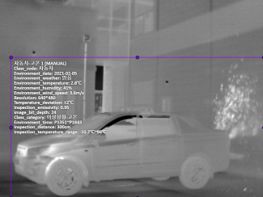
Source: AI Hub · 열화상 카메라 이미지 데이터셋 (dataSetSn=235)
AI Hub는 어노테이션 파일의 구조도 함께 공개합니다. licenses(엔에이치네트웍스), info(2021-01-27 생성), categories·images·annotations 4단 구조입니다. 각 이미지에는 클래스 카테고리뿐 아니라 환경 온도(Environment_temperature: 2.8°C), 검사 온도 범위(Inspection_temperature_range: -3°C ~ 6°C), bbox 좌표가 한 묶음으로 들어갑니다. 본문이 짚는 RGB/RGBa 채널 혼재나 사람-이상-식별 라벨 오염은, 이 스키마의 어느 한 칸이 비거나 어긋났을 때 발생하는 패턴입니다.
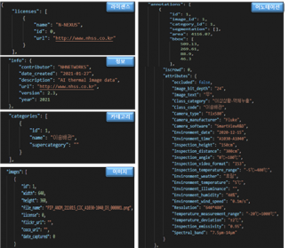
L1 — 기본 위생은 통과, 채널과 균형에서 잡힌 두 개의 신호
결측치는 122만 3,850장 중 단 1장. 라벨 정합성 경고도 없습니다. L1 기본 위생만 보면 이 데이터셋은 거의 완벽에 가깝습니다. 그러나 채널 일관성과 클래스 균형 두 항목에서, 학습 파이프라인이 마주칠 두 개의 시그널이 잡힙니다.
RGBa 80% + RGB 20% — 채널이 두 갈래로 갈렸다
같은 데이터셋 안에 RGB 이미지(19.92%)와 RGBa 이미지(80.08%)가 함께 들어있습니다. 한쪽은 알파 채널이 추가로 붙어 모델 입력 채널 수가 다릅니다. AI 학습 파이프라인이 채널 수를 강제로 맞추지 않으면, 같은 카메라로 찍은 같은 객체가 모델에게 다른 입력처럼 도착합니다.
전처리 단계에서 단일 포맷으로 통일하지 않으면, 모델 입력 채널이 일관되지 않습니다.
클래스 11.14배 편차 — 자동차-정상 vs 배-이상-고온
20개 클래스의 이미지 수는 평균 61,192장(표준편차 50,079)으로 분포 자체가 넓습니다. 가장 많은 자동차-정상이 225,954장, 가장 적은 배-이상-고온이 20,290장. 둘 사이 격차가 약 11.14배입니다.
클래스별 이미지 수 (상위 6개 + 하위 4개)
정상 클래스가 상위권을 점령하고, 이상 클래스는 대부분 하위권에 몰린다. 자연 발생 빈도를 반영한 결과로 추정되지만, 학습 시 클래스 가중치 조정이 필요한 수준이다.
차가운 배경과 좁은 열원 — 산업 열화상의 색채는 두 갈래로 갈린다
픽셀 단위로 RGB 채널의 값 분포를 보면, 데이터셋 전체에서 보라-파랑(낮은 R 값) 픽셀이 압도적으로 많고, 오렌지-노랑(높은 R 값) 픽셀은 정점이 좁고 뾰족합니다. 차가운 배경이 화면 면적의 대부분을 차지하고, 열원은 작고 강하게 빛난다는 산업 열화상 특유의 시각 정체성이 한 차트에 담깁니다.
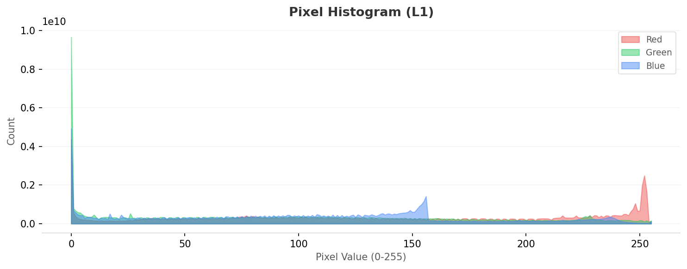
▲ L1 픽셀 히스토그램. 보라-파랑(저값 R) 픽셀이 데이터의 다수, 오렌지-노랑(고값 R)은 좁은 뾰족 봉우리로 솟는다. 산업 열화상의 시각적 정체성.
평균이 흐릿할수록 클래스 안이 산만하다 — 세 쌍의 정상/이상 미리보기
각 클래스의 픽셀 평균은 그 클래스 내부의 시각적 다양성을 그대로 보여줍니다. 흐릿할수록 다양한 각도·거리·온도가 섞여 있다는 뜻이고, 또렷할수록 비슷한 구도가 반복된다는 신호입니다. 다음 세 쌍이 이후 L2·L3 밀도 분석의 좌표 역할을 합니다.
 실제
실제
 평균
평균
 실제
실제
 평균
평균
 실제
실제
 평균
평균
 실제
실제
 평균
평균
 실제
실제
 평균
평균
 실제
실제
 평균
평균
▲ 각 카드 왼쪽: 클래스 대표 이미지(실제 샘플) / 오른쪽: 같은 클래스 전체의 픽셀 평균. 이송배관 정상/이상 평균이 거의 같은 자줏빛으로 수렴한다. L1만으로는 정상과 누출이 잘 갈리지 않는다.
L2 — 정상과 이상이 처음 갈라지는 지점
L2는 Wolfram ImageIdentify Net V2의 1,280차원 특징 공간에서 분포·기하·밀도를 봅니다. "모든 이미지를 일단 일반 사진으로 본다"는 시선입니다. 열화상은 이 일반 시선에 잘 안 맞는 도메인이지만, 그래도 클래스별 위계와 정상/이상의 첫 갈림은 이 단계에서 드러납니다.
분포가 두 갈래로 갈린다 — 좌측 봉우리와 0.68의 좁은 스파이크
L2 밀도 히스토그램은 두 개의 봉우리와 한 개의 스파이크로 이뤄집니다. 좌측 피크(밀도 0.12~0.15)는 데이터의 다수가 모이는 자리이고, 오른쪽 0.68 부근의 좁고 높은 스파이크는 산업 설비 클로즈업 같은 "강한 신호" 이미지의 밀집 구역입니다. 분포가 갈리는 모양이 그대로 클래스 간 위계로 이어집니다.
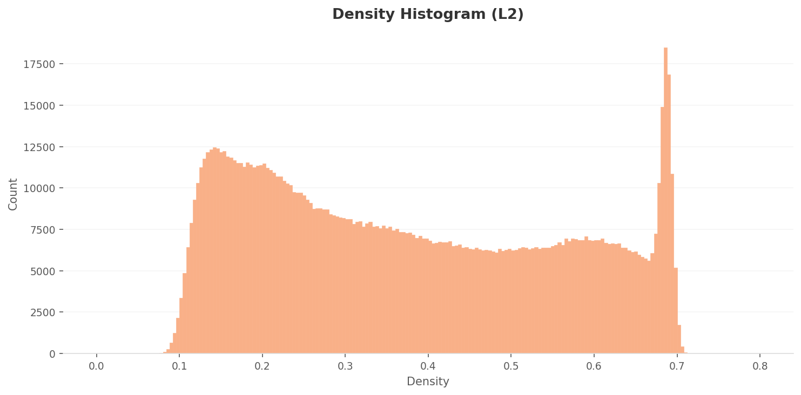
▲ L2 밀도 히스토그램. 좌측 봉우리에 0.68 부근의 좁은 스파이크가 더해진다. 일반 신경망 렌즈로 본 산업 열화상의 분포는 균등 분포에서 벗어나 있다.
정상과 이상이 0.45만큼 갈리지만, 클래스 내부가 그보다 산만하다
20개 클래스를 박스 차트로 늘어놓으면, 이상 클래스는 좌측(저밀도) 절반에, 정상 클래스는 우측(고밀도) 절반에 자리잡습니다. 단, 이상과 정상의 중앙값 차이는 평균 약 0.45. 모든 클래스의 whisker가 전 구간을 가로지르기 때문에, 클래스 내 다양성이 클래스 간 거리보다 큰 구간이 적지 않습니다.
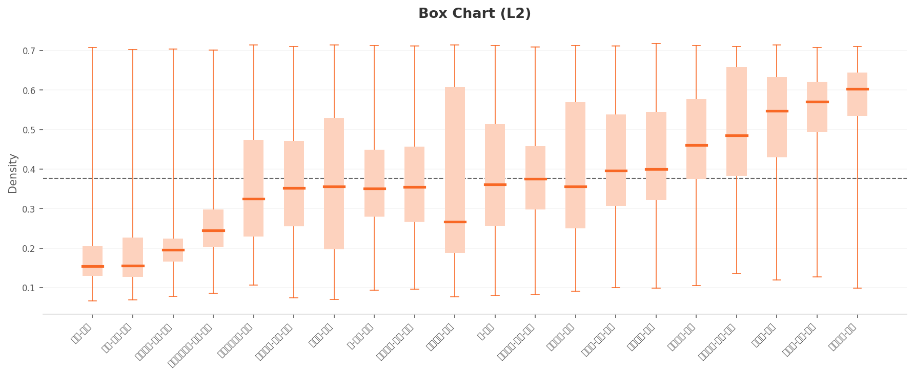
▲ L2 박스 차트. 점선(전체 평균) 좌측은 이상 클래스, 우측은 정상 클래스가 우세하다. 다만 모든 박스의 whisker가 전 구간을 커버한다. 분포는 갈리지만 클래스 내부는 여전히 산만하다.
평균 이미지가 분포의 한가운데에 없다 — PCA의 한 가지 조용한 경고
1,280차원을 두 개의 축으로 압축한 PCA 차트에서는 20개 클래스가 큼직한 단일 블롭으로 보입니다. 클래스 분리는 2D 투영에서는 시각적으로 잡히지 않습니다. 한 가지 눈에 띄는 점은 흰색 다이아몬드로 표시된 "Mean Image Feature"입니다. 데이터셋 전체 평균 이미지의 위치가 블롭의 한가운데가 아니라 좌측 가장자리에 떨어집니다. 20개 클래스의 평균이 실제 분포의 대표점이 아니라는 신호입니다.
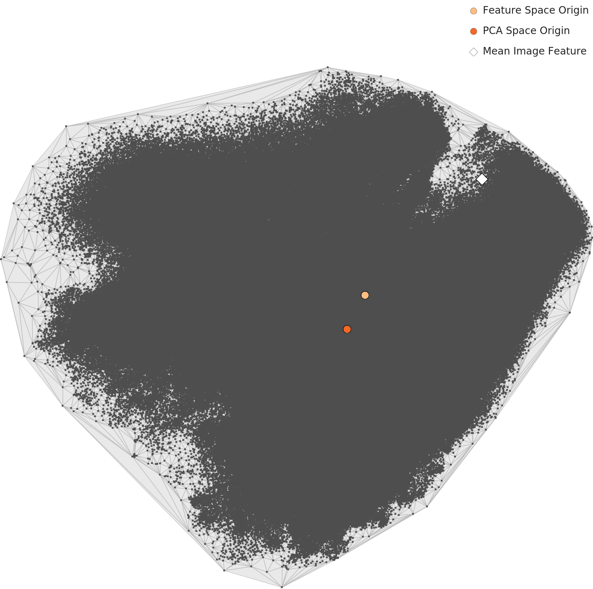
▲ L2 PCA. 클래스 분리는 보이지 않고, 흰 다이아몬드(평균 이미지 특징)가 분포의 가장자리에 위치한다.
같은 배관, 두 분포 — L2에서 처음 시각화된 정상/이상 비대칭
클래스 단위의 밀도 분포를 그 클래스 대표 이미지와 나란히 보면, 분포 모양이 바로 시각으로 옮아옵니다. 이송배관-정상의 분포는 우측 고밀도에 좁고 높게 모이고, 이송배관-이상-누출의 분포는 좌측 저밀도에 평평하게 깔립니다. 에어컨실외기와 사람도 같은 방향의 비대칭을 보입니다.
 밀도
실제
밀도
실제
 밀도
실제
밀도
실제
 밀도
실제
밀도
실제
 밀도
실제
밀도
실제
L3 — 차원을 줄이자 정상과 이상의 간격이 3배 벌어졌다
L3은 같은 데이터에 도메인에 맞춘 차원을 입힙니다. Wolfram ImageIdentify Net V2의 1,280차원을 약 10.7배 압축한 120차원이 이 데이터셋의 L3 렌즈입니다. 차원이 줄면 특징 공간이 조밀해져 절대 밀도 값이 통째로 커집니다. 그래서 L2(평균 약 0.38)와 L3(평균 약 1.75)의 숫자를 1대 1로 비교하면 안 됩니다. 봐야 할 것은 분포 모양과 클래스 간 간격의 변화입니다.
좁은 스파이크가 사라지고 고원이 펼쳐졌다 — 차원 최적화가 만든 분포
L3 밀도 히스토그램은 0.75~1.6 구간에 평탄한 고원을 만들고, 2.25 부근에서 단일 봉우리가 솟습니다. L2의 0.68 스파이크처럼 좁고 날카로운 군집은 사라졌고, 분포가 한층 자연스럽게 이어집니다. 차원 최적화가 특징 공간을 더 균등하게 활용하고 있다는 신호입니다.
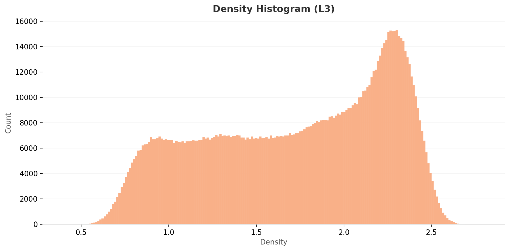
▲ L3 밀도 히스토그램. 0.75~1.6 구간의 광범위한 고원, 2.25 부근의 넓은 봉우리. L2의 좁은 스파이크가 사라지고 분포가 매끄럽게 이어진다.
박스 차트가 보여 주는 분리도 — 0.45에서 1.3으로, 3배 확대
L2에서 평균 0.45 정도였던 정상/이상 클래스의 중앙값 차이가, L3에서는 약 1.3으로 벌어집니다. 절대 밀도 단위가 다르긴 하지만 같은 클래스 묶음 안에서 비교하면 분리도가 약 3배 더 또렷해진 셈입니다. 좌측(저밀도)에는 배-이상-고온, 이송밸브-이상-누출 같은 이상 클래스가, 우측(고밀도)에는 이송배관-정상, 자동차-정상 같은 정상 클래스가 모입니다. 다만 모든 박스의 whisker가 0.4~2.5의 전 구간을 가로지른다는 사실은 그대로입니다. 클래스 내 다양성은 L3에서도 풀리지 않습니다.
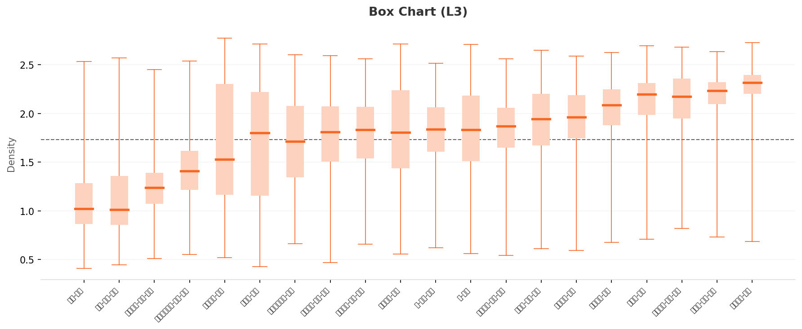
▲ L3 박스 차트. 좌측엔 이상 클래스(중앙값 0.9~1.1), 우측엔 정상 클래스(중앙값 1.9~2.35). 사이 간격이 L2 대비 3배 가까이 벌어진다.
같은 클래스, 같은 자리, 더 깊어진 간격 — L3에서 다시 본 네 쌍
L2에서 본 4개 클래스를 그대로 L3에서 다시 봅니다. 클래스의 위치(저밀도/고밀도)는 그대로지만 절대 밀도 값이 커지고, 클래스 사이 거리가 더 또렷해집니다. 이송배관-정상은 우측 고밀도(중앙값 약 2.3) 정점에 더 가깝게 솟고, 이송배관-이상-누출은 좌측 저밀도(중앙값 약 1.0)에 더 깊게 내려앉습니다.
 밀도
실제
밀도
실제
 밀도
실제
밀도
실제
 밀도
실제
밀도
실제
 밀도
실제
밀도
실제
PCA 2D에서는 보이지 않는 일 — 단일 블롭이 가린 차원의 성과
고차원에서 벌어진 일은 PCA의 2D 평면에서는 보이지 않습니다. L2와 L3 PCA를 나란히 두면 둘 다 큰 블롭 하나뿐이고, 분리가 시각화되지 않습니다. 차원 최적화의 성과는 박스 차트와 밀도 히스토그램의 변화로 확인해야지, PCA로 확인하려 하면 보이지 않습니다.
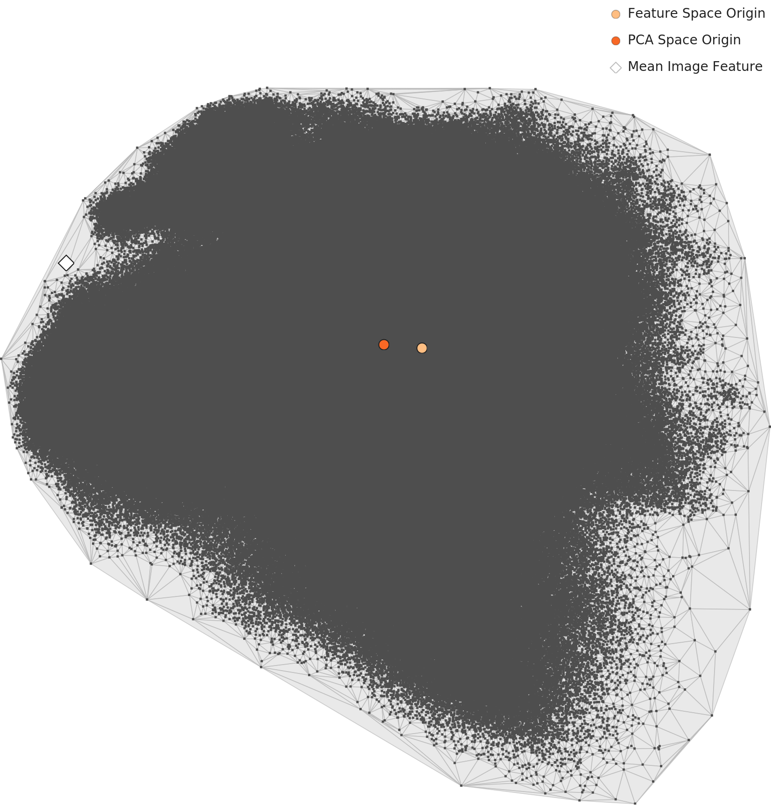
▲ L2와 L3 PCA를 같은 척도로 본다. 둘 다 단일 블롭, 평균 이미지(다이아몬드)는 분포 가장자리. 차원 최적화의 효과는 PCA가 아닌 박스 차트로 확인해야 한다.
차원 최적화가 닿지 못한 두 가지
L2에서 L3로 옮겨 가면 정상/이상 간격이 3배 벌어지지만, 저밀도 1·2위 이미지는 같은 사진이 그대로 반복됩니다. 차원 최적화가 해결하지 못하는, 이미지 수집 단계의 구조적 문제입니다. 두 가지 유형이 있습니다.
사람-정상 D1 — 1m 클로즈업의 무국적성
L2와 L3 모두 저밀도 1위에 같은 이미지가 떨어집니다. 파일은 HUM_NOM_21.02.10_CIC_A1058-A1118_D1_014970_bbox1.png. D1은 카메라가 피사체에서 1m 이내, 즉 얼굴과 상반신이 화면 전체를 채우는 거리입니다. 다른 클래스의 이미지가 산업 설비를 중간 거리에서 잡은 풍경인 데 비해, 이 사진은 사람 인체의 클로즈업입니다. 스케일도, 패턴도 다릅니다. 같은 "사람" 클래스 안에서도 외톨이가 됩니다.
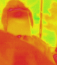
▲ 사람-정상 D1 클로즈업. L2·L3 모두 저밀도 1위에 자리한다. 차원으로 풀리지 않는 "수집 스케일" 차이.
자동차-정상 D30 — 한 클래스 안의 두 정상
225,954장으로 가장 큰 클래스인 자동차-정상이, 거리 한 토큰을 기준으로 두 갈래로 갈립니다. D3(3m 근접)에서는 밀도 약 2.7로 L3 고밀도 상위권에 들어가지만, D25~D30(25~30m 원거리)에서는 0.43~0.47로 떨어집니다. 같은 클래스 라벨이 붙어 있지만 AI에게는 두 개의 클래스에 가깝습니다. 원거리에서는 열 신호가 거의 사라진 차량 실루엣만 남고, 근거리에서는 엔진 열원과 차체 윤곽이 또렷한 두 개의 정상이 만들어집니다.
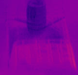
▲ 자동차-정상 D30. 30m 거리에서 보라-남색으로 식어버린 차량. 같은 라벨이지만 D3 자동차와는 시각이 거의 다른 클래스.
두 사례는 개별 이상치처럼 보이지만, 저밀도 상위 5장의 표를 펼치면 한 패턴으로 묶입니다. L2와 L3의 저밀도 TOP-5에서 5개 중 4개가 같은 사진이고, 남은 1개도 같은 D30 거리에서 찍힌 또 다른 자동차입니다. 클로즈업(D1)과 원거리(D25·D30) 두 극단이 두 렌즈 모두에서 분포 가장자리를 점령합니다. 차원으로 풀리지 않고 카메라 거리로만 풀리는 패턴입니다.
L2·L3 공통 저밀도 이상치 TOP-5
| 순위 | 클래스 | 거리 | L2 밀도 | L3 밀도 | L2/L3 공통 |
|---|---|---|---|---|---|
| 1 | 사람-정상 | D1 | 0.066 | 0.411 | ✅ 동일 이미지 |
| 2 | 자동차-정상 | D30 | 0.070 | 0.426 | ✅ 동일 이미지 |
| 3 | 사람-이상-식별 | D5 | 0.069 | 0.447 | ✅ 동일 이미지 |
| 4 | 자동차-정상 | D30 | — | 0.456 | L3 신규 |
| 5 | 자동차-정상 | D25 | 0.071 | 0.471 | ✅ 동일 이미지 |
5개 중 4개가 L2·L3 두 렌즈에서 같은 사진이 같은 위치에 떨어진다. 카메라 거리(D1·D25·D30)와 클로즈업/식음 두 축이 만들어내는 패턴.
사람-이상-식별 안에 자동차가 있다 — 라벨 오염의 흔적
L3 유사도 분석은 클래스마다 가장 밀도 높은 대표 이미지(피벗)와 그 주변 10개의 이웃을 함께 보여줍니다. 사람-이상-식별 클래스의 두 번째 피벗과 그 이웃 10개를 펼치면, 파일명이 한결같이 사람 코드(HUM)가 아니라 자동차 코드(CAR_AON_)로 시작합니다. 정확히는 CAR_AON_21.02.05_CIC_P1505-P1513_D20_* 계열로, 같은 날(2021-02-05) 같은 시각(P1505-P1513) D20(20m) 거리에서 촬영된 한 배치입니다. L3 밀도는 2.45~2.57의 매우 좁은 구간. 구조적으로 만들어진 군집입니다.
사람-이상-식별 클래스 안의 CAR_AON 군집 (L3 유사도 상위 10개)
2021년 2월 5일 P1505-P1513 D20 배치 한 세트가, 클래스 라벨만 "사람-이상-식별"로 붙은 채로 흘러들어 있다.
파일을 한 장 내려받아 들여다보면, 화면 대부분이 차가운 어두운 색이고 작고 약한 열 신호가 한쪽에 자리잡고 있습니다. 자동차 이상 촬영 씬에서 같은 프레임에 들어온 사람(또는 사람 형태의 물체) 영역을 사람-이상-식별로 추출한 것으로 보입니다. 라벨링 자체가 잘못이라고 단정할 수는 없습니다. 다만 정의상 "사람-이상-식별"이라는 클래스에 들어가야 할 시각적 신호와는 다릅니다.
▲ 사람-이상-식별 클래스에 들어온 CAR_AON 파일 한 장. 차가운 어두운 화면 한쪽에 작은 열 신호. 침입자/이상 행동 모델에는 부적합한 패턴.
실전 임팩트. 이 군집을 그대로 학습 데이터로 쓰면, 침입자/이상 행동 감지 모델이 자동차 이상 촬영 씬을 "사람 이상"으로 오분류할 가능성이 높아집니다. 카메라가 차량 위주의 상황을 잡는 산업단지에서는 False Positive가 폭증할 수 있습니다. CAR_AON_21.02.05_CIC_P1505-P1513 계열 파일의 클래스 라벨 일괄 재검토가 필요합니다.
실전 임팩트 — AI가 '누출'을 정상으로 본다면
데이터 품질 진단은 분포 그래프에서 끝나지 않습니다. 산업 안전 AI가 실제 현장에서 어떤 오류를 범할지로 옮겨야 비로소 의미가 생깁니다. 이송배관 클래스에서 가장 극적인 정상/이상 쌍을 직접 봅니다. L3 고밀도 TOP1(밀도 2.77)과 이상-누출의 중앙값(약 1.0)이 만나는 지점입니다.
⚠️ 시나리오: 같은 배관, 다른 분포 — 1m 정상 vs 0.5m 누출
왼쪽은 AI가 "가장 전형적인 정상"으로 평가한 이송배관 이미지입니다(D1, 밀도 2.77, L3 1위). 오른쪽은 이송배관-이상-누출의 대표 이미지(D0.5)로, 같은 도메인이지만 분포의 가장자리에 위치합니다(중앙값 ≈ 1.0).
다른 분포
정상 분포의 끝과 이상 분포의 시작이 겹치는 회색 지대. 산업 안전 AI가 가장 자주 틀리는 자리입니다.
🔄 1m와 30m, 같은 자동차가 두 개의 정상이 될 때
보조 시나리오도 같은 방향입니다. 자동차-정상은 D3에서 밀도 약 2.7로 가장 전형적인 정상으로 보이지만, D30에서는 0.43~0.47로 떨어져 같은 클래스 안에서 두 개의 봉우리를 만듭니다. 현장에서 카메라 거리를 표준화하지 않으면 같은 자동차가 다른 자동차로 학습됩니다. 야간·원거리 상황에서 차량 이상 신호를 놓치는 위험은, 여기서 시작됩니다.
✅ 해결의 방향 — 데이터 수집 단계의 표준화
차원 최적화가 정상/이상 간격을 3배 벌려준 것은 분명한 성과입니다. 그러나 차원으로 좁힐 수 없는 문제는 차원이 아닌 카메라에서 풀어야 합니다.
- ① 카메라 거리 토큰(D1·D30)을 1m 단위로 표준화하고, 극단 거리는 별도 서브클래스로 분리
- ② RGB와 RGBa 채널을 단일 포맷으로 통일
- ③ 다중 객체 프레임의 bbox 라벨링 절차 재점검 — 특히 자동차 이상 촬영 씬에서 추출된 사람 영역
L3 도메인 최적화는 데이터 품질 신호를 강화한다. 그러나 거리·채널·bbox 정합성은 수집 단계의 표준화로만 풀린다.
비교 프레임 — 폐기물보다 표준화 가능한 데이터, 그 가능성을 다 쓰지 못한 자리
같은 AI Hub 산업 도메인에서 100만 장 안팎의 거대 데이터셋을 진단한 이웃 리포트가 둘 있습니다. 도메인과 규모가 비슷한 두 데이터셋을 옆에 두면, 이 데이터셋의 위치가 더 또렷해집니다.
1,223,849장 · AI Hub 실사
산업 안전·재난 감지
~1,000,000장 · AI Hub 실사
산업 폐기물 분류
Pebblous 합성
군용 객체 분류
가장 가까운 비교 짝은 같은 AI Hub·실사·100만 장급의 #131 산업 폐기물 이미지입니다. 폐기물은 형태가 자유로워 수집 표준화가 어렵고, 열화상은 거리·각도·온도 구배가 형태를 결정짓는 만큼 표준화 가능성이 더 높습니다. 그럼에도 본 데이터셋은 거리 토큰(D1~D200)과 채널 포맷(RGB·RGBa)에서 표준화가 일부만 이뤄졌고, 그 틈이 L3 차원 최적화로도 메워지지 않습니다. 열화상은 폐기물보다 표준화 가능한 데이터입니다. 그러나 그 가능성을 다 활용하지는 못한 데이터셋이기도 합니다.
결론 — 차원으로 좁힐 수 있는 것과 카메라로 표준화해야 하는 것
L2에서 L3으로 옮겨가면 정상과 이상이 더 명확히 갈립니다. 평균 밀도 차이가 약 0.45에서 약 1.3으로, 3배 가까이 확대됩니다. AI 분류기에게 더 또렷한 결정 경계가 그어지는 셈입니다. 차원 최적화는 데이터 품질 신호를 강화하는 데 분명히 효과적입니다.
그러나 같은 단계에서 또 하나의 사실도 드러납니다. L2와 L3 두 렌즈 모두에서, 저밀도 1·2위는 같은 이미지가 그대로 반복됩니다. 사람-정상 D1 클로즈업과 자동차-정상 D30 원거리는 차원 어디서 봐도 비전형입니다. 거리 토큰이 만들어내는 한 클래스 안의 두 정상은, 차원이 아닌 카메라의 문제입니다.
그리고 L3 유사도 분석은 한 가지 발견을 더 덧붙입니다. 사람-이상-식별 클래스의 고밀도 군집을 펼치면 같은 날 같은 시각 D20 배치에서 추출된 자동차 코드의 파일들이 점령하고 있습니다. 카메라 표준화와는 결이 다른 문제, 즉 다중 객체 프레임에서 bbox를 어떤 클래스로 흘려보낼지에 대한 라벨링 절차의 문제입니다.
본 진단에서 정리된 7개의 발견을 한 표에 정렬하면 다음과 같습니다. 차원 최적화로 풀리는 신호와, 카메라·라벨링 절차로만 풀어야 할 신호가 한 줄씩 마주 보고 있습니다.
| 항목 | 발견 | 한 줄 평가 |
|---|---|---|
| L1 채널 | RGBa 80% + RGB 20% | 학습 전 단일 포맷 통일 필요 |
| L1 클래스 균형 | 11.14배 편차 | 학습 시 클래스 가중치 조정 권장 |
| L2 → L3 분리도 | 중앙값 차이 0.45 → 1.3 (≈ 3배) | 차원 최적화의 명백한 성과 |
| L2·L3 공통 저밀도 | 5개 중 4개 동일 이미지 | 차원으로 풀리지 않는 수집 스케일 문제 |
| 자동차-정상 분포 | D3 (2.7) vs D30 (0.43~0.47) | 한 클래스 안의 두 정상 — 거리 표준화 필요 |
| 이송배관 정상/이상 대비 | 2.77 vs 1.0 | 가장 극적인 신호 — 임계값 설계의 회색 지대 |
| 사람-이상-식별 라벨 오염 | CAR_AON_21.02.05 배치 점령 | bbox 라벨링 절차 재검토 필요 (HIGH) |
122만 장의 산업 열화상이라는 큰 자원은 그 자체로 한국 산업 안전 AI의 자산입니다. 차원 최적화가 그중 절반을 더 또렷하게 만들어 줬다면, 나머지 절반은 카메라 거리와 채널 포맷, bbox 라벨링 절차의 표준화로 풀어야 할 자리입니다. 이 데이터셋의 DataClinic 전체 진단 리포트는 DataClinic에서 직접 확인할 수 있으며, AI Hub dataSetSn=235에서 원본 데이터를 받을 수 있습니다.
참고문헌
데이터셋
- 1.엔에이치네트웍스 외. (2021). 열화상 카메라 이미지. 한국지능정보사회진흥원 (AI Hub). aihub.or.kr · dataSetSn=235
DataClinic 진단 리포트
- 2.DataClinic (Pebblous). (2025). DataClinic Diagnostic Report #128 — 열화상 카메라 이미지. dataclinic.ai/en/report/128
- 3.DataClinic (Pebblous). (2025). DataClinic Diagnostic Report #131 — 산업 폐기물 이미지. dataclinic.ai/en/report/131
- 4.DataClinic (Pebblous). (2025). DataClinic Diagnostic Report #225 — PBLS Military 3종. dataclinic.ai/en/report/225